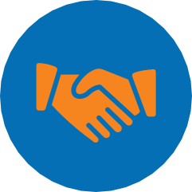
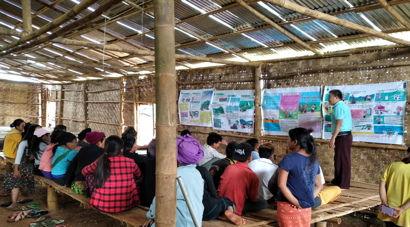

Impact by Regions, Countries & Territories
GFP Global Focal Point Highlights

Overview
The rule of law is essential for sustainable peace and resilient economies, as well as for the prevention or recurrence of conflict. To prevent or address injustice, inequalities or democratic deficits, UNDP works with multiple stakeholders, supports governments to fulfil their human rights obligations, and encourages all actors on the ground to operate in a way that is consistent with the rule of law and creates opportunities for all individuals, especially vulnerable individuals, to exercise their rights and access justice. UNDP promotes participatory political and reform processes and champions people-centred approaches to ensure that every person has a voice and a potential to influence national and local policymaking. UNDP provides expert advice, technical assistance and policy support to political leaders, civil society activists, women’s rights champions and other national partners. Its assistance is dependent on the will of political leaders and stakeholders, and therefore political engagement enables UNDP to pursue the objectives of increased accountability, public participation and adherence to the rule of law.
Global Focal Point: Rule of law for peace in fragile settings
The Global Focal Point for the Rule of Law (GFP) is a joint arrangement for delivery of the rule of law in fragile settings. The GFP reinforces the One-UN approach at the global and national levels to address violent conflicts, protect human rights and restore justice and security for people affected by crisis and conflict. It is co-chaired by UNDP and the UN Department of Peace Operations (DPO), and partners include UN Women, the Office of the High Commissioner for Human Rights (OHCHR), the UN Office on Drugs and Crime, the Peacebuilding Support Office (PBSO), the Department of Political Affairs, the UN High Commissioner for Refugees, UNICEF, the UN Office for Project Services (UNOPS) and the UN Team of Experts on Rule of Law and Sexual Violence in Conflict.
Inaugural session of the Special Criminal Court in the Central African Republic. © UNDP CAR
In 2021, the GFP offered catalytic funding to joint rule of law programming in Afghanistan, Central African Republic (CAR), Democratic Republic of the Congo (DRC), Haiti, Mali, Somalia and Sudan.
In 2021, the GFP offered catalytic funding to joint rule of law programming in Afghanistan, Central African Republic (CAR), Democratic Republic of the Congo (DRC), Haiti, Mali, Somalia and Sudan. In Somalia this support enabled the UN Assistance Mission in Somalia (UNSOM), UNDP, UN Women, UNICEF, and the Ministry of Justice in Somalia to hold consultations on the next phase of the Joint Justice Programme.
In the DRC, the Joint Justice Programme supported progress in combating impunity for international crimes, including conflict-related sexual violence. Fact-finding missions and mobile courts were organized as part of the provincial prosecution prioritization strategies and to conduct evidence-based investigations. The programme also aided the development of expert pools of lawyers specialized in international criminal law to improve the quality of the legal assistance provided.
Between January 2021 and April 2022, more than 25 expert deployments took place under the GFP umbrella. These included multi-agency online missions in support of new joint rule of law programmes in Libya and in Somalia, identifying and dispatching surge justice capacity for the implementation of joint activities in CAR and making police expertise available on electoral security in Uganda.
The GFP has also supported peace operations through its funding of the project “Towards Gender Parity for Justice and Corrections Government-Provided Personnel” (GPP), implemented by DPO-Justice and Corrections Services and the UN Institute for Training and Research (UNITAR) in partnership with UN Women and UNDP. The project resulted in an increase of deployed women justice and corrections officers from 34 percent in December 2020 to 42 percent in December 2021, thereby greatly exceeding the target of the Uniformed Gender Parity Strategy. Among other achievements, a pool of 30 highly qualified women corrections officers was made available for deployment to peace operations, and nominations from UN Member States included an increased share of women candidates. In addition, the project received Special Recognition from the UN Women Executive Director for Outstanding Achievements in Gender Parity in October 2021.
The GFP has continued to convene its partners to discuss matters of mutual interest and to offer a forum for consultations on rule of law, including through the development of guidance notes on varying topics of partners interests. Topics include police planning, decongestion of prisons, remote court hearings, investigation and prosecution of conflict-related sexual violence and the Human Rights Due Diligence handbook in peace mission settings.
% of women justice and corrections officers deployed to UN Peace Operations
UNDP – UNHCR partnership on local governance and the rule of law
Forced displacement and statelessness represent both the consequences of complex and growing crises, and a crisis on their own. The number of persons displaced worldwide is increasing due to violence, conflict or natural disasters. According to UNHCR’s Refugee Population Statistics Database, there is an estimated 84 million forcibly displaced people globally and an estimated 4.2 million stateless people. It is anticipated that climate change and its affects will intensify the situation. Forced displacement tends to become protracted, with the burden heavily weighing on developing countries.
Strong rule of law and effective local governance are key to prevent, address and solve the problems faced by refugees, internally displaced persons (IDPs) and their host communities, as well as stateless people. Displaced individuals need legal protection and assistance as they face a multitude of challenges including gaps in civil registration, discrimination in access to services and work opportunities and lack of access to housing, land, and property. Displaced women are more at risk of gender-based violence (GBV) and less likely to receive protection from law enforcement. The protracted nature of displacement and the burden on host communities also increases the risk of conflict in the areas of settlement.
In 2021, UNDP and the United Nations High Commissioner for Refugees (UNHCR) continued to implement their commitment to strengthen the partnership between the two agencies and increase joint rule of law and local governance responses to better support the identification and implementation of sustainable solutions for all displacement-affected communities.
A UNDP-UNHCR joint programmatic framework was developed in 2019, following the pledges made by UNDP at the Global Refugee Forum and at the High-Level Segment on Statelessness.
In 2021, to support national and local authorities and host communities to prepare for the arrival of refugees and IDPs, UNDP and UNCHCR developed a Rapid Diagnostic Toolkit on Local Governance, Rule of Law and Forced displacement that will help identify priority areas for local interventions.
In Pakistan, UNDP’s Global Programme supported a dedicated intervention to ensure that key institutions and stakeholders were prepared to address the issues arising from forced displacement caused by the crisis in Afghanistan and to monitor its impacts on the human rights situation of Afghan refugees and human rights defenders from both Afghanistan and Pakistan.
In Myanmar, the Global Programme supported UNDP and UNHCR to commence joint work in Rakhine, to expand access to legal information and assistance to displaced populations and other vulnerable communities, including stateless people, and support their equal access to essential services and human rights protection.
To consolidate the joint work and generate knowledge, a review of existing UNDP-UNHCR collaborations in the areas of rule of law and local governance was conducted and two online workshops took place to share lessons and successful practices across the humanitarian-development-peace nexus. One workshop was organized through the Global Focal Point for the Rule of Law (GFP) in collaboration with UNHCR to share the experience from UNDP’s and UNHCR’s Country Offices in Ethiopia and Lebanon, and the second event was to share best practices between UNHCR, UNDP and Japan International Cooperation Agency.

Raising awareness of land laws and land title, Kone Chan IDP camp in Kutkai, Kachin State. © Heartland Foundation/UNDP